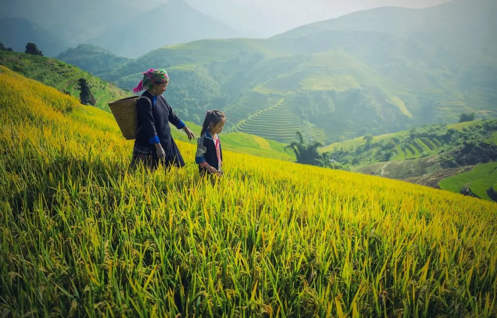
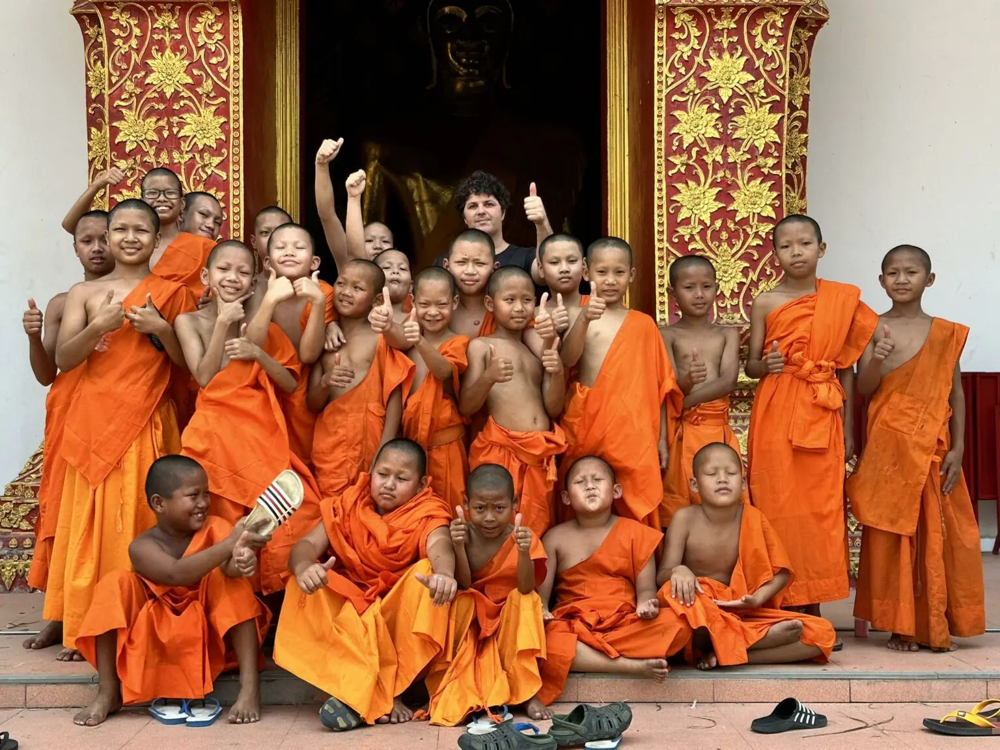
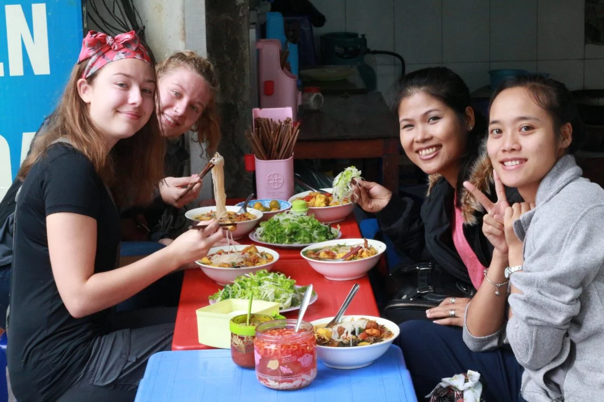
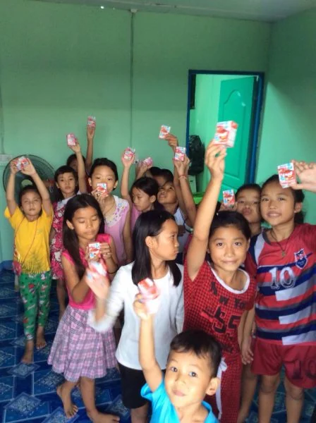

You tell stories
You shoot, you cut, you write, you frame. You're tired of pointing your lens at content. You want it pointed at something that matters.
Chiang Mai, Thailand
A base for young adults, makers and storytellers in the mountains of northern Thailand. Come for six months. Leave different.
The city
A 700 year old temple town ringed by mountains, full of night markets, studios, coffee and cheap street food. Digital nomads cross the world for Chiang Mai. You will live here.





Who we are
Since 1960, Youth With A Mission has been a global movement of Christians giving their twenties to two simple ideas: know God, and make Him known. Today that movement reaches more than 180 nations. Our base in Chiang Mai is one small, stubborn outpost of it.
So yes, this is a faith thing. We follow Jesus, and we won't hide that behind creative language. If you come here it will shape everything: how we train, how we travel, what we make, and why.
Who comes here
You shoot, you cut, you write, you frame. You're tired of pointing your lens at content. You want it pointed at something that matters.
You're 19 and everyone keeps asking about your plan. You'd rather spend a year finding out who you are before you pick one.
Design, music, paint, code. You're good at your craft, and you carry a quiet suspicion it was given to you for something bigger than a portfolio.
No creative label, no grand plan. Just a nagging sense that life is bigger than the feed. That counts. That's how most of us got here.
The programs
Every school lives at the base, runs in English, and ends with your feet somewhere new in Asia.

The front door
Discipleship Training School
Five months of learning who God is and who you are, then taking it on the road across Asia. Where everyone starts.
Learn moreFor the makers
School of Arts & Design
A school for artists, designers and musicians. Make honest work, in community, and learn what your craft is actually for.
Learn more
For the storytellers
Documentary Film School
Documentary filmmaking in the field. Real people, real stakes, cameras in hand across Southeast Asia.
Learn more
For the pioneers
School of Frontier Missions
For the ones ready to go where the map runs out. Training for life and work among peoples who have never once heard the name of Jesus.
Learn moreLife here



"I came for the filmmaking. I stayed because for the first time my work and my faith weren't living in separate rooms."
Nadia, 24, Brazil
"Sunday worship on the rooftop, geckos on the wall, mangoes from the market. I've never felt further from home, or more at home."
Jonas, 20, Germany
"I wasn't even sure I believed any of it when I landed. Nobody panicked. They just let me ask everything."
Priya, 26, United Kingdom
Straight answers
Our schools are built on following Jesus and everything here runs on that. You don't need to have it all figured out, and honest doubt is welcome. But you should want to explore faith seriously, because you'll be swimming in it.
Each program has a fee covering housing, meals and training, plus outreach travel costs. Most students fundraise part or all of it. Exact numbers live on each program page, so there are no surprises when you arrive.
You enter Thailand on an education visa arranged with our team before you fly. We walk every student through the process step by step. It's more paperwork than drama.
For DTS, none at all. For Create and Project Video, bring a working knowledge of your craft and a willingness to be stretched. The School of Frontier Missions asks for a completed DTS first.
Beyond the classroom
Ongoing work students plug into alongside their school, all year round.


One more thing
The lanterns go up over Chiang Mai once a year. The door here is open all of it.